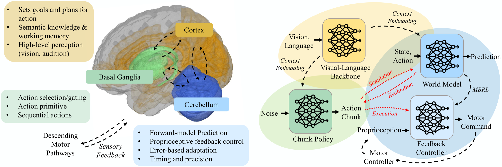

I
Architecture: online correction during execution
Action chunking borrows from how cortico-basal ganglia circuits compress sequences into executable units, but those circuits mainly select and initiate actions. Fast correction during execution relies on the cerebellum. Most chunking-based policies pass chunks straight to joint-level control, so reactivity depends entirely on how often inference can run. We advocate a dedicated correction layer with two parts: predictive adjustment, where a world model scores or refines candidate chunks and triggers replanning on prediction error, and reactive correction, where a high-rate proprioceptive controller tracks the plan and absorbs disturbances.
